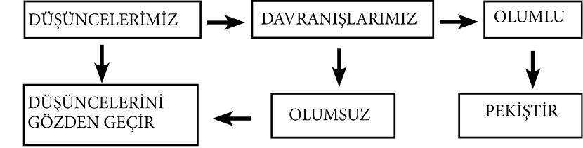

BÖLÜM 4 - OLUMLU OLMAK
• Olaylara olumlu yaklaşım, istediğiniz yaşamı size yaklaştırır.
• Aynı gözlerle hem iyimser hem de kötümser bakabiliriz dünyaya.
• Ne düşünüyorsanız onu yaşarsınız; ne yaşamak istiyorsanız onu düşünün.
• Seçtiğimiz kelimeler yaşam tarzımızı oluşturuyor.
OLUMLU OLMAK
• Olaylara olumlu yaklaşım, istediğiniz yaşamı size yaklaştırır.
Yaklaşım çok önemlidir. İnsan, düşüncelerini bir işi YAPMAK veya YAPMAMAK üzere programlar. “Yapmak” işin nasıl yapılacağı (çözüm yolları), “yapmamak” ise işin nasıl yapılmayacağı (bahaneler, engeller) üzerinde durur.
Bunlardan hangisi bizi hedefimize götürür?
Dünyada, hiçbir şey yapamayacağını düşünen insan bile, en azından tutumlarını değiştirebilir. Buradaki “en azından” sözü, yapılacak işin küçüklüğünü değil; işe başlama noktasının ne kadar yakınımızda ve bizim elimizde olduğunu ifade eder. Çünkü tutumlarımız, olayları nasıl ele aldığımızı gösterir. Olayları ele alış şeklimiz ise o işi başarmadaki en önemli göstergedir.
O halde tutumlarını, yaklaşımlarını değiştirebilen, yani kendini değiştirebilen insan, tüm dünyayı değiştirmeye en büyük adaydır. Gelecek, işe kendinden başlayıp hedeflerine yılmadan adım adım yürüyenlerindir.
Bakış açınız, hayatınızdır. Hayat, bizim ona yüklediğimiz anlamlardan oluşur. Yaşantımızın nasıl olmasını arzu ediyorsak onun tohumlarını ekelim: Güzel hayallerle dolduralım…
Davranışlarımızın, eylemlerimizin olumlu ya da olumsuz sonuçlarının kaynağı düşüncelerimiz ise işe oradan başlamak en yararlı yoldur. Akarsuyun kaynağında, çıkış noktasında yapacağınız bir değişiklik yatağı dolayısıyla akarsuyun tüm yönünü etkileyecektir.
O halde düşüncelerimizde yapacağımız bir değişiklik de davranışlarımızın yönünü değiştirecektir. Bu değişikliği olumlu buluyorsak tekrarlandığında pekişecek, akarsu yatağı gibi derinlik kazanacaktır. Eğer istediğimiz sonucu alamamışsak da kaynağı yani düşüncelerimizi yeniden kontrol etmekte yarar var.

İnsan zaman zaman yaşamına “Neden?” sorusuyla bakmalı:
“Neden böyle yaşıyorum?”
“Neden bu işte çalışıyorum?”
“Neden bu kişiyle evliyim?”
Ve daha da alt kademelere inerek “olaylar karşısında neden bu davranışta bulunuyorum?”
Bu sorulara vereceği cevaplarla ya o yaptığı şeyi yapmaya devam edecek ya da durum, davranış değişikliğine gidecektir. İkisi de faydalı. Çünkü “Neden?” sorusuna olumlu cevaplar veriyorsa yaptığı şeyi yapmaya devam edecek; fakat bilinçli bir şekilde, cevap olumsuz ise o zaman o yaptığını değiştirmenin yolunu aramaya başlayacak ve o güne dek yaptığı kör bir alışkanlık haline gelen yaşamını istediği seviyeye getirecektir. “Neden?” sorusu o güne dek yaptıklarımızı sorgulamamızı ve yaşantımıza anlam katmamızı sağlar.
• Aynı gözlerle, hem iyimser, hem de kötümser bakabiliriz dünyaya.
“Hayatı yaşamanın iki yolu vardır: Biri hiçbir şeyin mucize olmadığını düşünmek, diğeri her şeyin bir mucize olduğunu düşünmek...”
Albert Einstein (1879-1955)
İyimser, her şeye rağmen bir şeyler elde ederken, kötümser daha baştan kaybetmiştir. Burada iyimserlikten kasıt; anlamsız bir şekilde yüzünde gülümsemeyle gerçeklerden uzak bir yaklaşım değildir. Asıl kastedilen; şartlar ne olursa olsun, o ortama sızan küçük de olsa, bir ışık kümesi bulup ona yönelmek ve çıkışa doğru yol almaktır.
Kötümserlerin sözlerine de tamamen kulaklarınızı tıkamayın. Onların işaret ettiği tehlikeler için (bu konuda inanılmaz derecede ustadırlar) gerekli tedbirleri almak hiç de fena olmaz. İyimserliğin içine katılan bir doz kötümserlik ayaklarımızın daha sağlam yere basmasını sağlar.
Olumluluk ve olumsuzluk zıt yönlere koşan iki atlet gibidir. Ancak olumsuzluk koştukça varış çizgisinden uzaklaşmaktadır.
Hasta: “Bu benim ilk ameliyatım, doktor bey... O nedenle biraz sinirliyim.”
Doktor: “Sakin olun... Benim de öyle.”
•Ne düşünüyorsanız onu yaşarsınız; ne yaşamak istiyorsanız onu düşünün.
Kim kendi hakkında kötü hayaller kurmak ister? Kimse istemez elbette. Ama endişelerimizi öyle senaryolaştırırız ki düşüncelerimiz bununla meşgulken hayatımıza iyi şeylerin girmesine engel oluruz. “Eğer istemediğiniz şey üzerine odaklanırsanız, o şey olur,” diye uyarıyor, zihin haritaları tekniğiyle ünlü Tony Buzan.
Olayları abartmak balon şişirmeye benzer. Siz şişirdikçe gerçek boyutundan farklı bir hal almaya devam edecektir. Bazen bir konuyla ilgili endişelerimiz veya korkularımız üzerinde o kadar çok dururuz ki daha sonra baktığınızda gerçekliğinden yüz kat fazla büyüttüğümüzü fark ederiz.
“Deneyim, bir insanın başından geçenler değildir,” diye bahsediyor ünlü yazar Aldous Huxley (1894-1963), “Başından geçenlerin bıraktığı izlerdir… O insanın, o başına gelenle ne yaptığıdır.”
Yani “deneyim” dediğimiz zaman yaptığımız yanlışlardan, başımıza gelen acı olaylardan çıkardığımız sonucu kastederiz. Ve akıllı insan, bunları yeniden yaşamamak için tedbirler alarak aynı hatalara düşmeme uğraşı verir.
Ancak daha akıllı insan ise sadece bununla yetinmeyip, elde ettiği başarılardan, başına gelen güzel şeylerden de dersler çıkararak bunların yeniden ve yeniden olabilmesi için çaba gösterir.
Sadece başımıza gelen kötü şeylerden kaçınmak tümüyle yaşantımızı kısıtlar. Biz aynı zamanda iyiye ve güzele doğru da hareket etmeliyiz. Bu bilinçte ikisini birlikte götürebilen insan, başarılı bir hayata, daha yakın olandır.
İşte bu sebeple yaşadıklarımızı “deneyim kazanmak” diye nitelendiririz. İyi ya da kötü ne yaşarsak yaşayalım ortada bir kazanç oluşmuştur.
Hayatımızı yargılarken bazen fazlasıyla acımasız olabiliyoruz. Hataları bastıra bastıra dile getirmek ve sürekli hata aramak, o hataların yerleşmesine ve yanlışların artmasına neden olur. Yapılan iyi davranışların altını çizerek ve iyi olanı bulup çıkarmaya çalışarak da iyi davranışların yerleşmesi ve çoğalması sağlanır. Tercih bizim elimizde. Olumlu ya da olumsuz özelliklerimizin hangisinin artmasını istiyorsak ona yoğunlaşalım. Hangisini artırırsanız diğeri azalacaktır; olumlu düşünce ve davranışlar arttığında olumsuzluk kendiliğinden azalacaktır.
“Beynimizdeki düşünceler oluşturmuştur bizi.
Her ne isek, düşüncelerle işlenerek yapılmıştır hepsi.
Bir kişinin beyninde kötü düşünceler etkinse,
Öküzün çektiği arabanın ardından gelen tekerlek gibi
Onun ardından da acının geldiği bilinse.
Bir kişinin beynindeki düşünceler güzelliğini korursa,
Kendi gölgesi gibi mutluluk takip eder onu nasıl olsa.”
James Allen (1864-1912)
Tatsız bir olay sonrası yapılması gerekenler:
1. Tatsız olayın küçük de olsa iyi bir yanı varsa önce orayı gör.
2. Ardından düzeltebileceğin kötü yanlarını tek tek ele alarak gidermeye çalış.
3. Kalan noktaları da o günün dersi olarak hanene kaydet.
• Seçtiğimiz kelimeler yaşam tarzımızı oluşturuyor.
İstemediğiniz bir sonuçla karşılaştığınızda, düşüncelerinizden ısrarla “zaten ben şanslı doğsaydım…” cümlesi geçiyor mu? Cevabınız evetse veya buna benzer olumsuz ifadelerse, bir sonraki eyleminizin sonucunu da tayin etmiş oluyorsunuz.
Böylece kendi söyleminizi ispatlamaya çalışırcasına zincire yeni bir halka daha ekliyorsunuz. Sonuç karşısında hoşnutsuzsunuz ama hayat bilgeliğinin, hayatı anlamış olmanın verdiği haklı (!) gururu yaşıyorsunuz bir yandan da. Şanssız olduğunuzu düşüncelerinizde siz söylediniz ve davranışlarınız o yönde hareket etti. Beyniniz sadece verdiğiniz emirleri yerine getirdi.
“Tüberküloz tedavisi, hastanın göğsünde olanlar kadar kafasının içinde olanlara da bağlıdır.”
Sir William Osler (1849-1919)
Düşüncelerimizde ve konuşmalarımızda nasıl bir tutuma sahibiz?
Kendimizle veya çevremizle olan görüşlerimizde, yıkıcı mı yoksa yapıcı bir tavır mı takınıyoruz?
Düşünce ve konuşmalarımızla hayallerimizi, güvenimizi, direncimizi, arzumuzu ve motivasyonumuzu sürekli yaralıyorsak bizim oluşturduğumuz (affedersiniz ama) kurtlar, ağacın gövdesini –bizi- içten içe kemiriyor demektir. Böylece kendi kendimizi yıkıma sürüklüyor oluruz ki bu farkına vararak durdurmamız gereken büyük bir tehlikedir.
Yapıcı kelimeler, bizi ileriye taşıyor mutlu ediyor; yıkıcı olanlar ise bizi geriletiyor ve mutsuz kılıyor. Yaşam daima tercihler sunuyor bize; yol ayrımları ve tabelalarla karşılaşıyoruz sürekli. Bilinçli bir yaşam, bizi seçimlerimizle istediğimiz yere götürecektir. Bunun için de bir pusulaya ihtiyacımız var:
“Yaşam pusulasına.”
Hayallerimizi, ideallerimizi, değerlerimizi, ilkelerimizi belirleyip yüklediğimiz bu pusula, yol ayrımlarında bize yardım edecektir. Böylece kararsızlık ve rastgele seçimlerin yerini, yapılanın farkında olunduğu bir tavır alacaktır.
Farklı yerler gezmek, değişik alanlardaki kaynakları taramak ve düşüncelerimizdeki olumsuz sözcüklerin yerini olumlularla değiştirmek; hayal gücümüzdeki sınırlamaları kaldırıp zenginleştirmek adına atacağımız adımlardan sadece birkaçı.
“Yapamam,” “olamam” gibi olumsuz düşünceler zihninizde olduğu sürece, olumlu bir sonuç almanız tesadüflere kalmıştır. Beynimizi bir kap gibi düşünürsek hayatınızda hangi sonucu elde etmek istiyorsanız o kaba onu koyun, tersini değil. Çünkü hangisini koyarsanız, diğeri kendine yer bulamayacağından kapta sadece o olacaktır. Kontrol mekanizmasına (beyne) hangi verileri girerseniz o sonucu (davranışı) alırsınız.
Bazen “ben bunu yapamam” diye düşünüp sonra da unutup yaptığımız bir olayı görünce şaşırıp kalırız. Aslında biz ona olumsuz yaklaşmasaydık ta en başında yapacaktık zaten. Ama kendimize “yapamam” diye yineleyerek unutturmadığımız çok durum var sanıyorum. Bu sebeple girişeceğimiz herhangi bir şey için “yapabilirim” veya “yapamam” diye düşünmektense vakit kaybetmeden “Nasıl yapabilirim?” diye sorgulamak en iyisidir. Böylece gereksiz ve bazen vazgeçmemize neden olan o ilk aşamayı hızla geçmiş oluruz. “Nasıl yapabilirim?” diye bir başlangıçla zaten o işe girişmişsiniz demektir.
“Kuşağımın en büyük keşfi, insanların içsel zihinsel durumlarını değiştirerek yaşamlarının dışsal yönlerini değiştirebilmeleridir.”
William James (1842-1910)
Başkalarıyla konuşurken sözlerimize nasıl dikkat ediyorsak, karşımızdakinin incinmesini önemseyerek kelimelerimizi özenle seçiyorsak, kendi iç konuşmamıza da en azından aynı özeni göstermeliyiz.
Bir yanlış davranışta karşımızdakine “gerizekâlı,” “beceriksiz,” “ahmak” demek onu nasıl incitirse, yanlışlarımız, hatalarımız sonucunda söyleyeceğimiz acımasız iç sözler de bizi o denli incitir, yıpratır.
“Ben, sakarım.”
“Ben, bunu yapamam.”
“Zaten kaderim de hiç gülmedi.”
“Amma da şanssızım.”
“Bana çıkmaz” vs…
Olmasını istediğimiz şey böyle bir yaşam mı?
Kişisel zeminde olumsuz düşünceler geliştirdiğimiz gibi toplumsal zeminde de kendimize özgü, bize geri götüren düşüncelere fazlasıyla sahibiz.
“Biz adam olmayız.”
“Adamlar yapmış.”
“Bizde olsa… (olumsuz bir son)” gibi.
İç konuşmamızda yıkıcı ve olumsuz kelimeler yerine, yapıcı ve olumlu olanlarını kullanmalıyız. Biri benliğimizi yıpratıp hayat enerjimizi baltalarken, diğeri kendimize güveni artırıp güç verir. Seçim sizin.
Kavramları yeniden tanımlayalım:
YAPAMAMAK = YAP AMA MAK-sadını bil. (Bu kavram bize, ancak bilinçle atılan adımlardan istediğimiz sonuçları alabileceğimizi anlatır.)